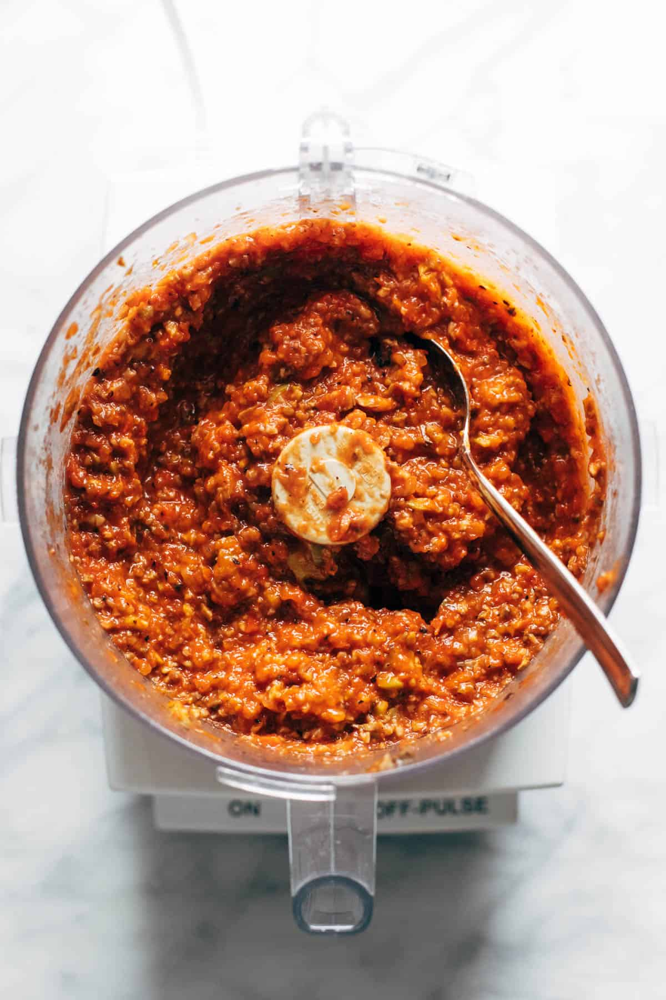
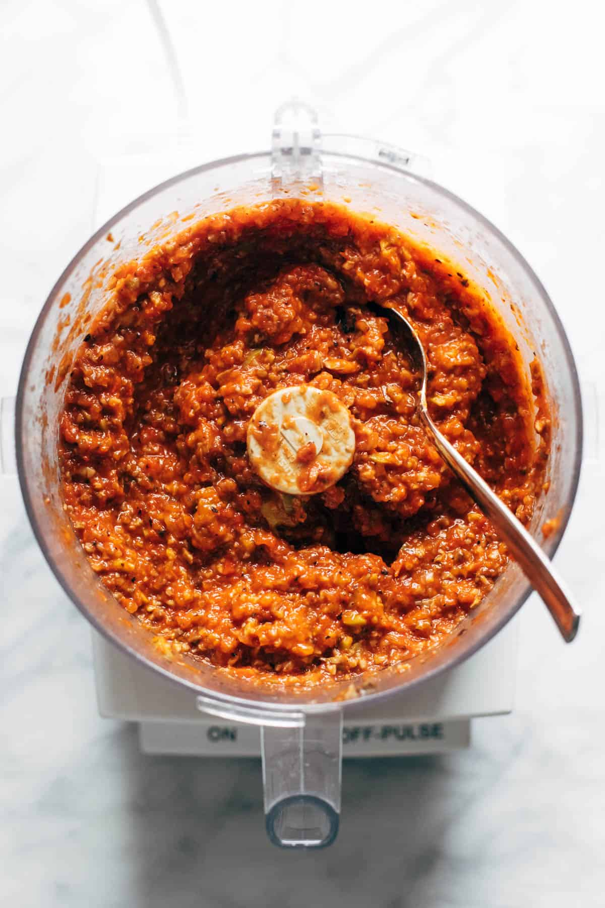

INGREDIENTS
On Your Sheet Pan:
12 ounces cherry or grape tomatoes
8 ounces fresh white button mushrooms,
washed and quartered
half on an onion, roughly chopped
1 tablespoon olive oil
1/2 teaspoon salt
For Your Pasta:
1 pound spaghetti (reserve 1/2 to 1 cup pasta water)
1 14-ounce can diced tomatoes
2 cloves garlic
1/2 teaspoon salt
1/2 cup pitted olives (optional)
3 tablespoons olive oil
juice of 1 lemon
1 2-ounce jar capers, drained and rinsed
1/4 cup butter
fresh basil, Parmesan, for topping
 
